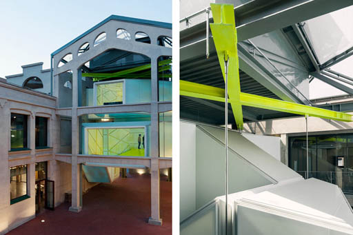

La Cosa es uno de los elementos más llamativos de la rehabilitación de Medialab-Prado, una escalera colgante situada entre las dos naves, al inicio del patio, que también funciona como pasarela para comunicarlas entre sí. Es una estructura geométrica de perfiles abstractos, construida a base de grandes poliedros irregulares. Sus paredes blancas esconden LEDs programables que se iluminan de colores por la noche, reflejando la vinculación del centro con la cultura digital.
El único acceso de La Cosa está situado en la planta 0 de la nave Alameda. De ahí podemos subir a las dos plantas superiores y desde sus respectivos rellanos entrar a cualquiera de las dos naves.
⇧ Volver arriba
Originalmente, en la antigua Serrería Belga, las dos plantas superiores de las naves estaban unidas en su extremo Norte, el más cercano a la Plaza de las Letras, por unas pasarelas que permitían cruzar de una a otra, dejando libre el paso por debajo para que los carros accediesen al recinto. En la planta baja, al igual que sucede ahora, las naves no estaban comunicadas entre sí, lo que obligaba a salir al patio para ir de una a otra.
En la rehabilitación, estas pasarelas fueron demolidas, conservándose el armazón de vigas y pilares de hormigón revocado que las sostenían, así como su remate en forma de frontón triangular. Replicando este armazón y adosado al mismo, se construyó uno nuevo de hierro, con unas viguetas de color amarillo fosforito en la parte superior de las que cuelgan los tirantes que sujetan La Cosa. Esta escalera colgante permite la comunicación entre pisos y naves, no solo en horizontal sino ahora también en vertical, y al no estar apoyada en el suelo sigue dejando espacio libre para transitar bajo ella.
Por fuera, La Cosa se asemeja a una gran escultura abstracta, formada a partir de la superposición de poliedros irregulares. Sus paredes lisas, de color blanco translucido, ocultan los escalones del interior. Están fabricadas en un material textil reforzado con resina y ocultan por dentro unas luces LED programables que permiten iluminarlas de colores por la noche. Algunas caras de estos poliedros son grandes ventanales a través de los cuales se ve el interior de La Cosa.
⇧ Volver arriba
El interior de La Cosa repite las formas irregulares del exterior, con techos inclinados y paredes que no siempre se unen en ángulo recto. Ambos elementos están recubiertos en su totalidad por paneles de tela tensada de color blanco, reforzada con resina, que al golpearlos suavemente suenan como un tambor. Estos paneles son de forma poligonal, alternando triángulos, rombos y rectángulos, con una línea de color fucsia en el borde. Por detrás tienen luces LED que pueden programarse para iluminar las paredes y el techo en diferentes colores.
Resulta muy llamativo el color amarillo fosforito con el que están pintados los escalones, las barandillas y el suelo. Entre éste y la pared, discurre una hendidura en la que están semiocultas unas luces blancas que ayudan a iluminar la escalera.
De día, el interior de La Cosa parece una nave espacial, con el amarillo fosforito del suelo reflejándose en las paredes blancas. De noche, el efecto es también muy futurista, con luces de colores cambiantes que te envuelven.
⇧ Volver arriba
El arranque de La Cosa se encuentra en la planta 0 de nave Alameda: dos tramos de escalones de color amarillo fosforito, con barandilla de tubo metálico a ambos lados, que confluyen en un mismo rellano. El primero está frente a la puerta de entrada, paralelo al patio, y el segundo a la derecha, un poco más atrás y perpendicular al primero.
En el rellano que conecta estos dos tramos hay una ventana cuadrada de 2 por 2 metros orientada hacia la Nave Cenicero y que, como todas las ventanas de La Cosa, va de suelo a techo. Desde este rellano, podemos seguir subiendo, ya en un solo tramo, hacia un enorme ventanal rectangular de 4 metros de ancho, un mirador que se asoma al patio, con las fachadas acristaladas de las naves a ambos lados y el jardín al fondo.
Dejando a nuestra espalda este mirador, encontramos una rampa bastante ancha que nos lleva al rellano de la primera planta. Desde aquí podemos girar a la derecha, para entrar a las oficinas, o a la izquierda, para entrar al Lab 1 y los Minilabs, atravesando en ambos casos unas puertas correderas de cristal.
Si seguimos recto, continuamos subiendo por un tramo de escaleras y llegamos a un descansillo con una ventana más pequeña orientada hacia la Plaza de las Letras. Girando 180 grados y dejando la ventana a nuestra espalda, subimos un segundo tramo para llegar al amplio rellano de la segunda planta. A la derecha tenemos las residencias, a la izquierda el auditorio y de frente un segundo mirador cuadrado, de 3 por 3 metros, que vuelve a dar al patio.
A la altura de nuestros pies, por fuera de la ventana, se ve una viga horizontal de hormigón gris con unas marcas más oscuras por la parte de dentro. Estas marcas, conservadas también en otra viga que se ve desde el mirador de la primera planta, son un testimonio de la ubicación de las antiguas pasarelas que unían las plantas superiores de las dos naves y que fueron demolidas para construir La Cosa.
⇧ Volver arriba
⇦ Anterior: El patio
⇨ Siguiente: Fablab